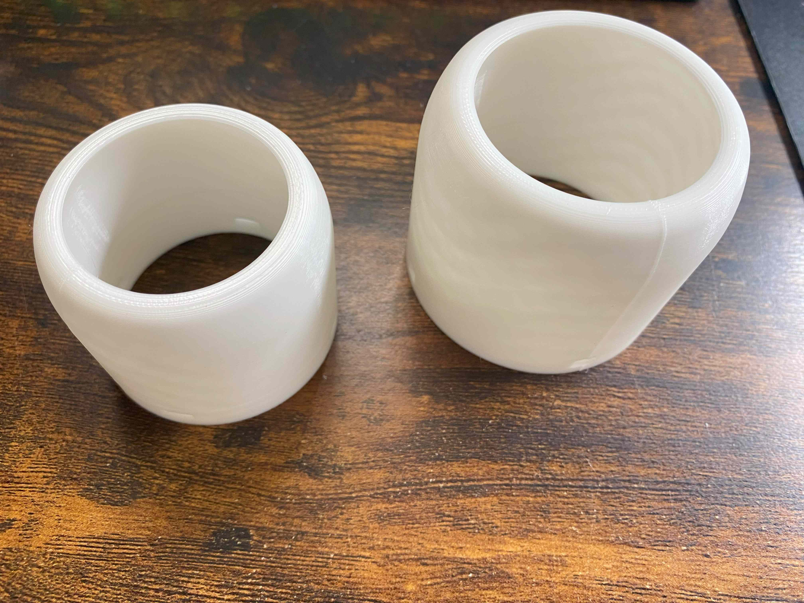
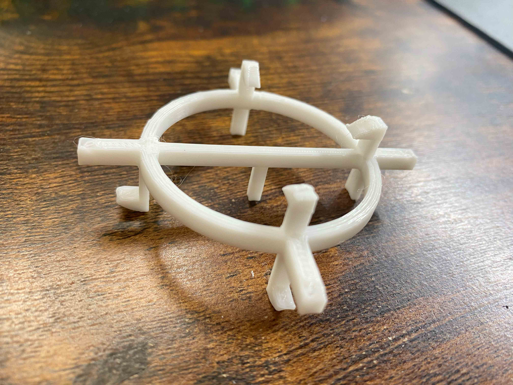
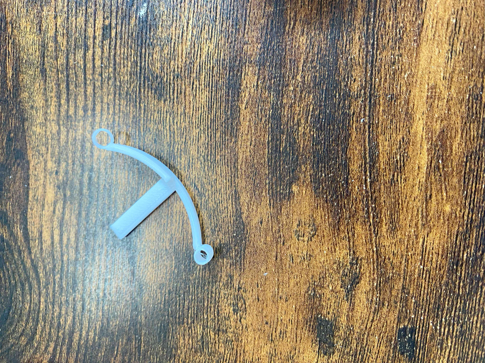
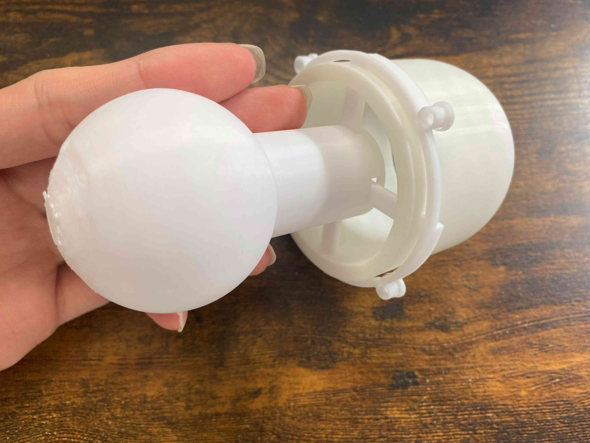
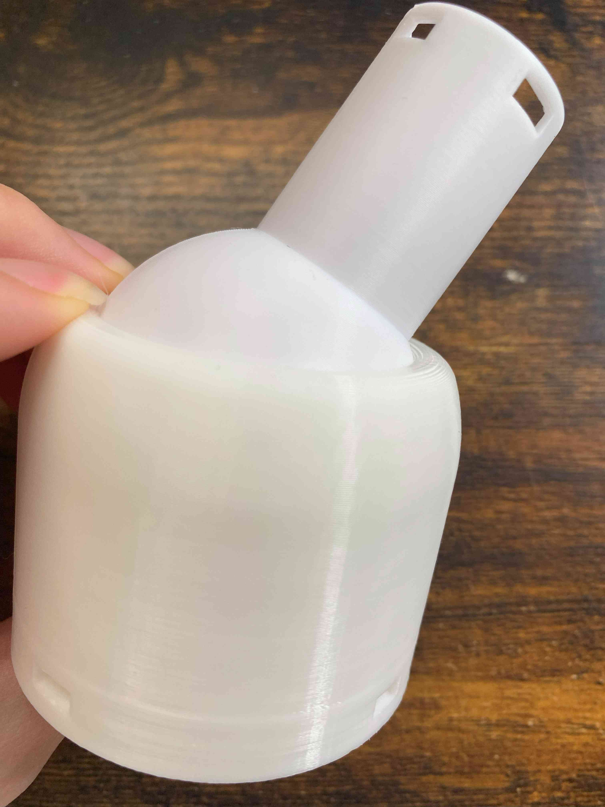
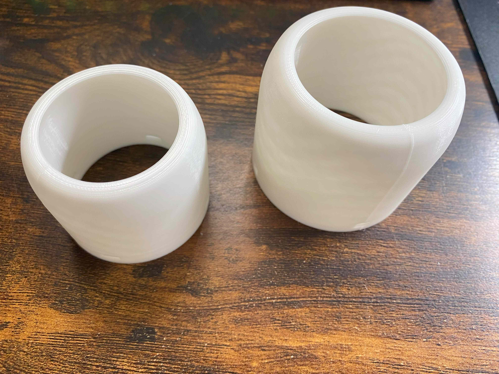
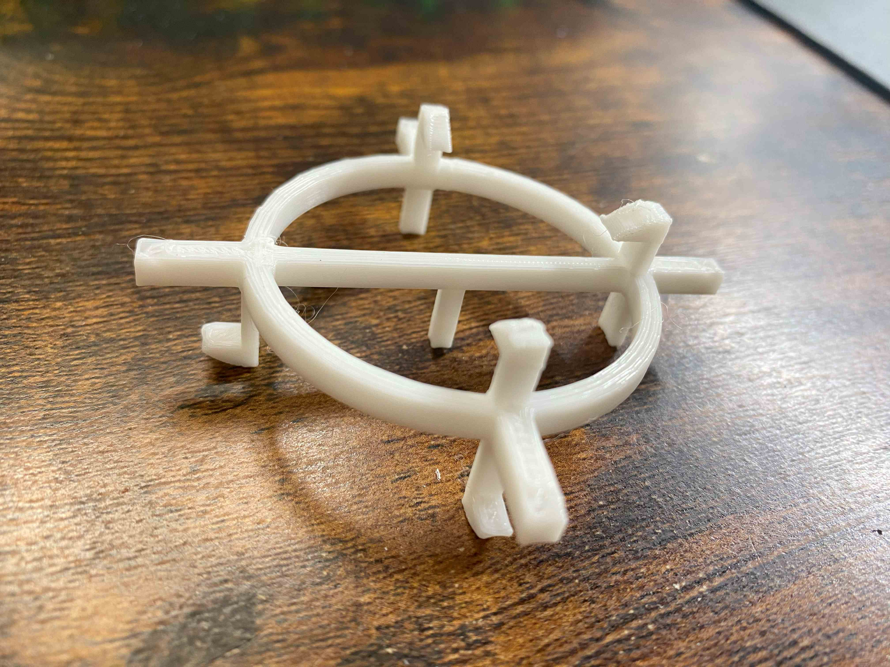
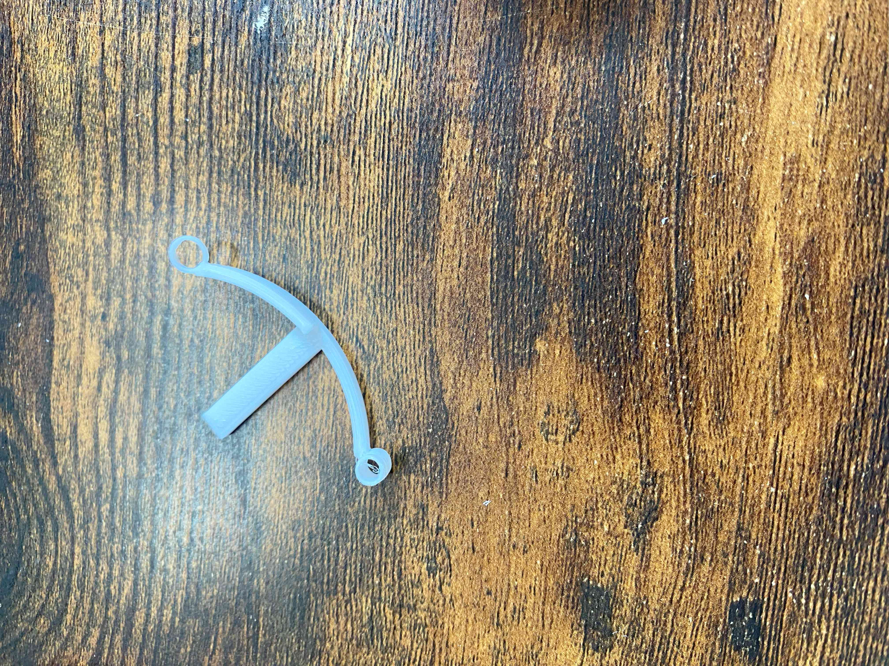
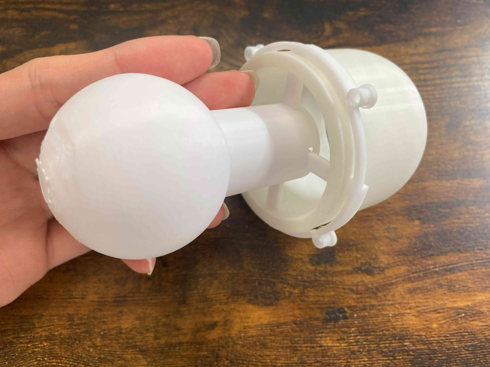
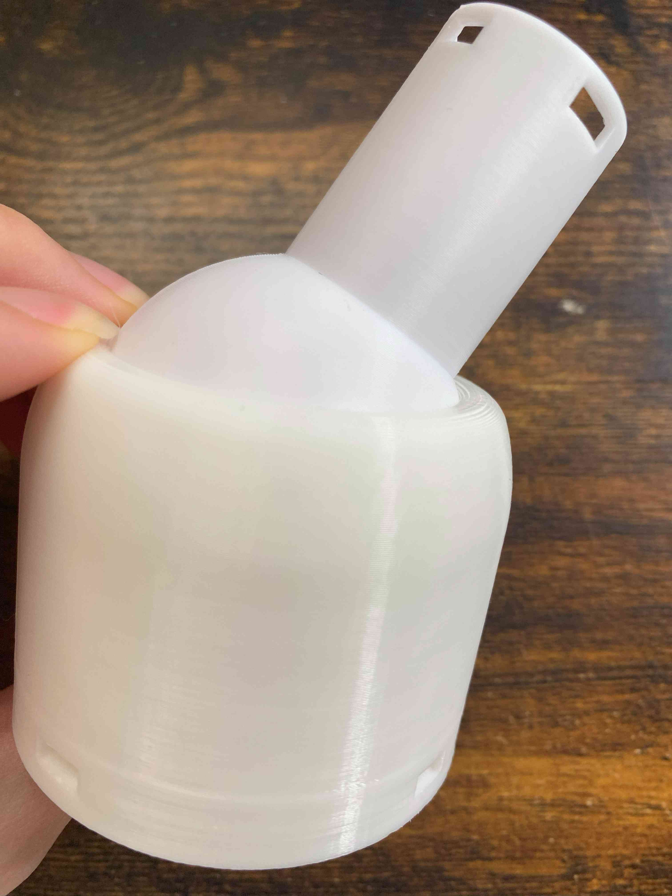

１．進捗と問題
関節制作の進捗：一関節分の印刷が完了
過程で出てきた問題：大きさの調整・関節どうしの接続部分がうまく動作しない（解決済み）
今後の課題：全体ができ始めた時の挙動や問題の確認
過程で出てきた問題：大きさの調整・関節どうしの接続部分がうまく動作しない（解決済み）
今後の課題：全体ができ始めた時の挙動や問題の確認
２．問題について
前回乗せた設計物をそれぞれ印刷した際に大きすぎる気がしたので大きさを0.85倍に修正した
そのおかげで印刷時間が大幅に短縮された

別の問題として関節どうしをくっつける接続部分が動作しなかった
具体的に言えば作った爪部分をしならせてはめる構造にしていたが、しなるそぶりもなく一発で折れた

あとからFABラボにいらっしゃる職員さんに尋ねたところそもそも素材があまりしならない様子
うまくしならせる構造は素材を変えるかしならせる部分の長さを極端に長くするくらいしか方法がなさそう
代替案として穴にはめ込んでから設計時に作った余裕を使って固定する方式にした
また固定部分に糸をとうして傾けるように設計した



関節の傾き具合についても確認が取れた
もうちょっと曲げられるようにしたほうがよさそうかも
そのおかげで印刷時間が大幅に短縮された

別の問題として関節どうしをくっつける接続部分が動作しなかった
具体的に言えば作った爪部分をしならせてはめる構造にしていたが、しなるそぶりもなく一発で折れた

あとからFABラボにいらっしゃる職員さんに尋ねたところそもそも素材があまりしならない様子
うまくしならせる構造は素材を変えるかしならせる部分の長さを極端に長くするくらいしか方法がなさそう
代替案として穴にはめ込んでから設計時に作った余裕を使って固定する方式にした
また固定部分に糸をとうして傾けるように設計した



関節の傾き具合についても確認が取れた
もうちょっと曲げられるようにしたほうがよさそうかも
３．総評
一応最低限動作を確認できる部品が作れたため動作確認の一段階が終わった
接続部分の問題はとにかく機能するものを代わりに作ったため設計に粗がある
次回以降はそれを軽く修正して、二個以上の関節をつなげた時の問題を把握していきたい
接続部分の問題はとにかく機能するものを代わりに作ったため設計に粗がある
次回以降はそれを軽く修正して、二個以上の関節をつなげた時の問題を把握していきたい
今後の予想される課題一覧：
強度が今後足りるのか・ひもの引っ張りを利用した構造はうまくいくのか
曲げるときにかくつかないか・動作の精密性は良好か⇒全体ができてからしか具体的にはわからない
音声認識はつけたとしてどうするのか・水平装置はどうするか⇒ソフトウェアとの兼ね合いもある
現状から考えて置ける課題:
細かな動きをするために先のほうの構造をどうするのか⇒今のうちに考えるべき問題
完成像の認識:
何をできるようにするのか＝ものを持てる・取れる・体を支えられる（60～70％くらいのイメージ像）
強度が今後足りるのか・ひもの引っ張りを利用した構造はうまくいくのか
曲げるときにかくつかないか・動作の精密性は良好か⇒全体ができてからしか具体的にはわからない
音声認識はつけたとしてどうするのか・水平装置はどうするか⇒ソフトウェアとの兼ね合いもある
現状から考えて置ける課題:
細かな動きをするために先のほうの構造をどうするのか⇒今のうちに考えるべき問題
完成像の認識:
何をできるようにするのか＝ものを持てる・取れる・体を支えられる（60～70％くらいのイメージ像）